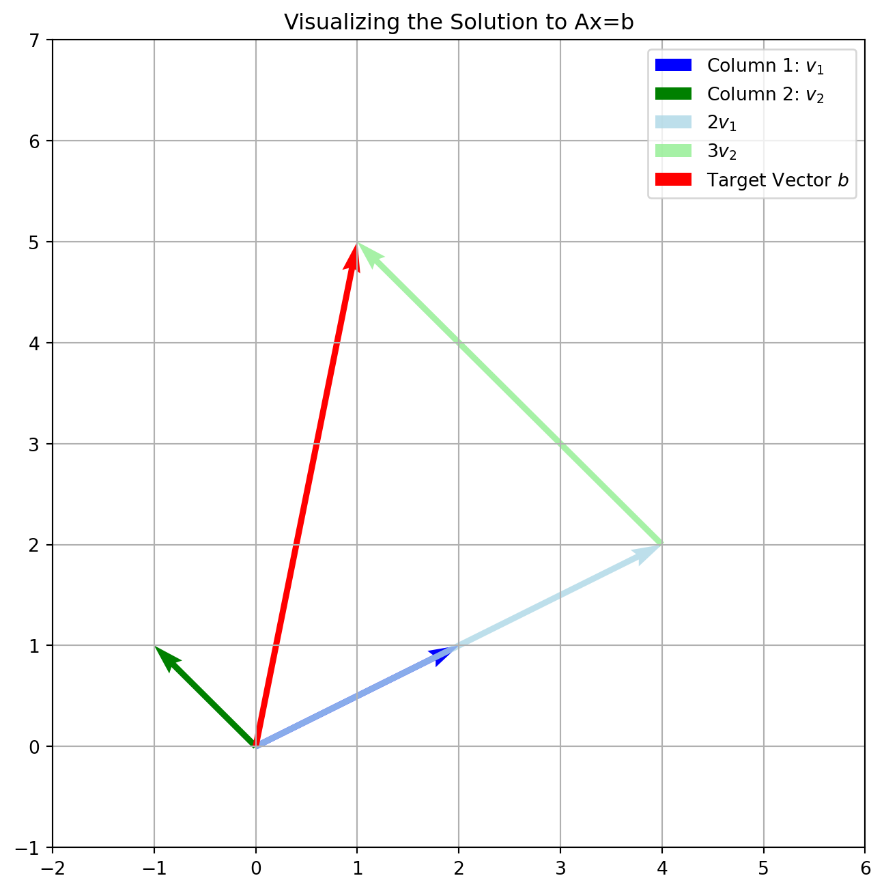

Code
import numpy as np
import matplotlib.pyplot as plt
# The column vectors from our system
v1 = np.array([2, 1]) # First column
v2 = np.array([-1, 1]) # Second column
# The target vector on the right-hand side
b = np.array([1, 5]) # Should equal 2*v1 + 3*v2
# The solution we will learn to find is x=2, y=3
x, y = 2, 3
# --- Visualization ---
plt.figure(figsize=(8, 8))
ax = plt.gca()
# Plot the basis vectors
ax.quiver(0, 0, v1[0], v1[1], angles='xy', scale_units='xy', scale=1,
color='blue', label=r'Column 1: $v_1$')
ax.quiver(0, 0, v2[0], v2[1], angles='xy', scale_units='xy', scale=1,
color='green', label=r'Column 2: $v_2$')
# Plot the linear combination step by step
ax.quiver(0, 0, (x*v1)[0], (x*v1)[1], angles='xy', scale_units='xy', scale=1,
color='lightblue', alpha=0.8, label=r'$2v_1$')
ax.quiver((x*v1)[0], (x*v1)[1], (y*v2)[0], (y*v2)[1], angles='xy', scale_units='xy', scale=1,
color='lightgreen', alpha=0.8, label=r'$3v_2$')
# Plot the target vector b
ax.quiver(0, 0, b[0], b[1], angles='xy', scale_units='xy', scale=1,
color='red', label=r'Target Vector $b$')
# Formatting
ax.set_xlim(-2, 6)
ax.set_ylim(-1, 7)
ax.grid(True)
ax.set_title("Visualizing the Solution to Ax=b")
ax.legend()
plt.show()
